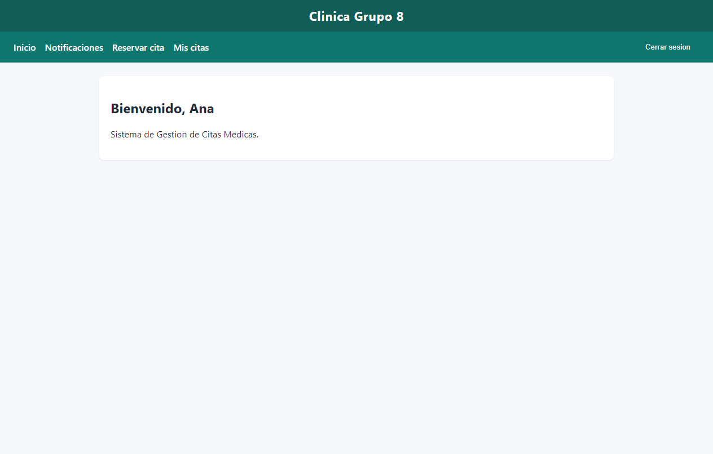
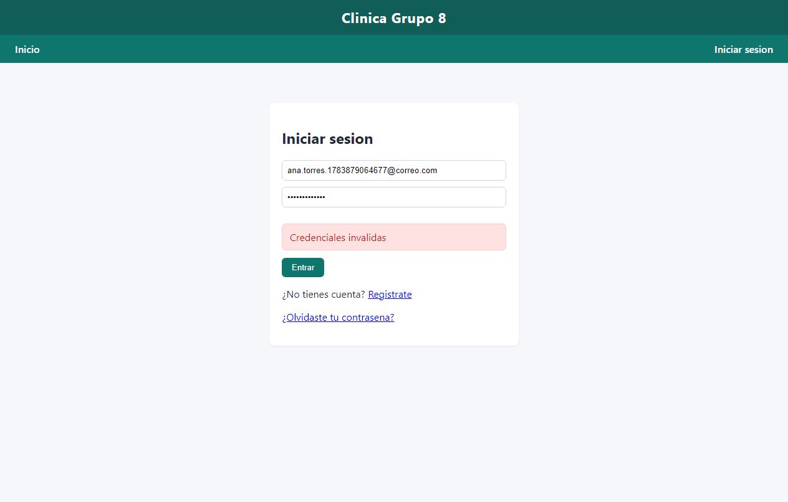
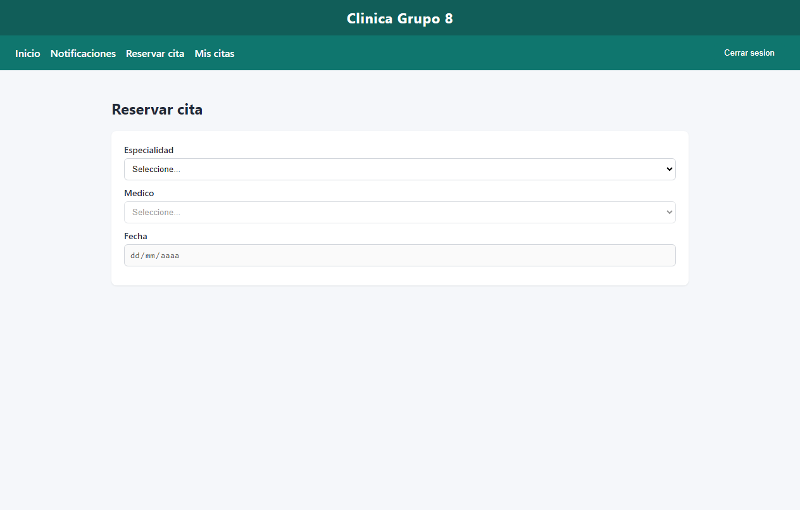
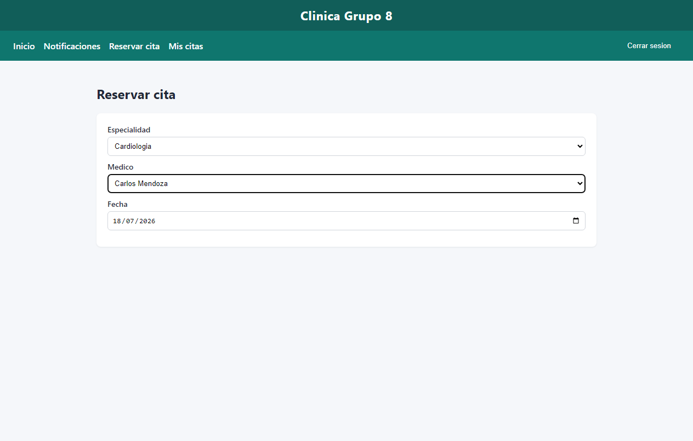
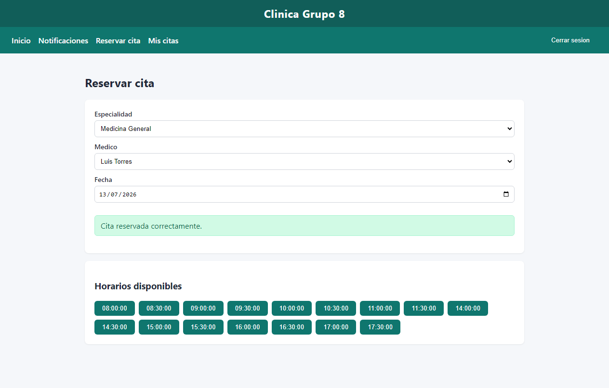
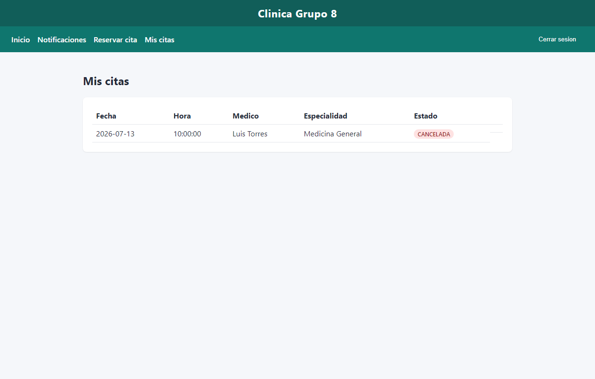
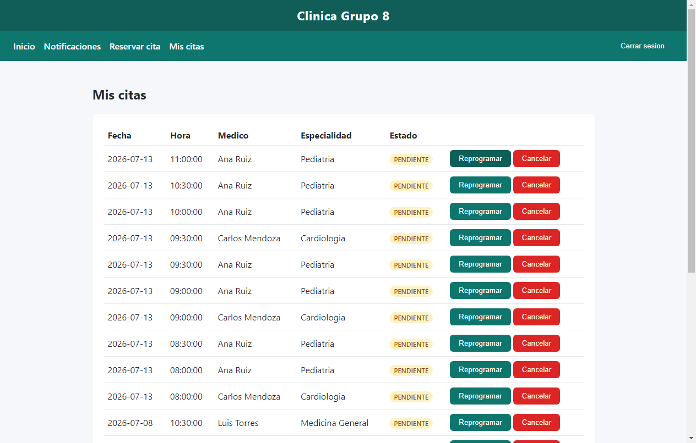

Sistema: Gestión de Citas Médicas — Clínica Grupo 8
URL: https://sistemacitas.vercel.app
API: https://sistemacitas.vercel.app/api
Herramienta: Selenium WebDriver 4 + Chrome headless
Ejecución: 2026-07-12T17:57:42.585Z → 2026-07-12T17:58:42.771Z
Ejecutor: MarioADM
Resumen: 7 aprobado(s), 1 observado(s), 0 fallido(s)
| ID | RF | Caso | Estado | ms |
|---|---|---|---|---|
| CP01 | RF01 | Registro exitoso de paciente | APROBADO | 6848 |
| CP02 | RF02 | Inicio de sesión con credenciales inválidas | APROBADO | 4004 |
| CP03 | RF03 | Listado de especialidades existentes | APROBADO | 5056 |
| CP04 | RF04 | Consulta de disponibilidad sin bloques configurados | OBSERVADO | 11169 |
| CP05 | RF05 | Reserva de cita en horario disponible | APROBADO | 7444 |
| CP06 | RF05, RNF05 | Intento de reserva simultánea sobre el mismo horario | APROBADO | 4311 |
| CP07 | RF06 | Cancelación de una cita pendiente | APROBADO | 6101 |
| CP08 | RF07 | Reprogramación a un horario fuera de disponibilidad | APROBADO | 10128 |
RF: RF01 · Módulo: Autenticación / Registro · Tipo: UI (Selenium)
Objetivo: Verificar que un paciente nuevo pueda crear su cuenta con datos válidos y obtener acceso inmediato.
Esperado: El sistema crea la cuenta, inicia sesión automáticamente y muestra la bienvenida al paciente.
Obtenido: APROBADO (6848 ms)

RF: RF02 · Módulo: Autenticación / Login · Tipo: UI (Selenium)
Objetivo: Verificar que el sistema rechace el acceso cuando la contraseña no corresponde a la cuenta.
Esperado: El sistema rechaza el acceso, permanece en /login y muestra un mensaje de error genérico.
Obtenido: APROBADO (4004 ms)

RF: RF03 · Módulo: Reservas / Catálogo · Tipo: UI (Selenium)
Objetivo: Verificar que el paciente autenticado vea el catálogo de especialidades al reservar.
Esperado: Se listan las especialidades activas (Cardiologia, Pediatria, Medicina General).
Obtenido: APROBADO (5056 ms)

RF: RF04 · Módulo: Reservas / Disponibilidad · Tipo: UI (Selenium) + API
Objetivo: Verificar el comportamiento al consultar un día sin bloques de horario del médico.
Esperado: Mensaje claro de que no hay horarios disponibles (no lista vacía silenciosa).
Obtenido: OBSERVADO (11169 ms)
Defecto: DEF03

RF: RF05 · Módulo: Reservas · Tipo: UI (Selenium)
Objetivo: Verificar que el paciente pueda reservar un horario disponible.
Esperado: Mensaje «Cita reservada correctamente» y cita en estado pendiente.
Obtenido: APROBADO (7444 ms)

RF: RF05, RNF05 · Módulo: Reservas / Concurrencia · Tipo: API (doble sesión)
Objetivo: Verificar que solo una de dos reservas simultáneas al mismo slot sea aceptada.
Esperado: Una reserva confirmada y la otra rechazada por horario no disponible.
Obtenido: APROBADO — Simultáneo 2026-07-13 11:00:00: HTTP 200/409 → aceptadas=1 (4311 ms)
Defecto: DEF01
Sin captura (caso API o sin driver).
RF: RF06 · Módulo: Mis citas · Tipo: UI (Selenium)
Objetivo: Verificar que el paciente pueda cancelar una cita pendiente (CP05).
Esperado: Estado CANCELADA visible en Mis citas.
Obtenido: APROBADO (6101 ms)

RF: RF07 · Módulo: Mis citas / Reprogramación · Tipo: UI (Selenium) + API
Objetivo: Verificar que no se permita reprogramar a un horario fuera de los bloques del médico.
Esperado: La API rechaza 19:00 y la UI no ofrece ese horario.
Obtenido: APROBADO (10128 ms)
Defecto: DEF02
